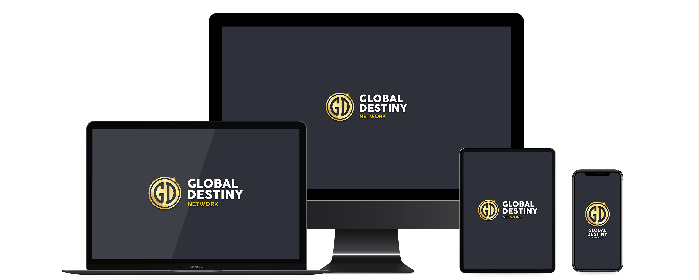

come funziona?
Tutto su un’unica piattaforma in continuo aggiornamento.
Global Destiny è una community per imprenditori digitali con l'obiettivo di emergere online e migliorare le loro finanze, salute, crescita personale e relazioni. È stato creato dopo 4 anni di lavoro e investimenti in formazione e sviluppo.
cosa è incluso
Oltre 100 ore di videocorsi e Live Streaming ogni settimana.
5+ metodi di guadagno online attuabili con zero budget e/o con budget più elevati
Comunity dedicate in base al business di riferimento e supporto 24/7.
Programma affiliazione per chi parte con 0€ di budget.